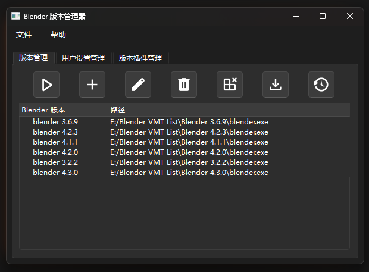

核心功能
快速切换版本
一键切换不同版本的 Blender，无需手动寻找安装目录
版本下载管理
从官方源自动下载并安装，支持自定义下载源
配置文件管理
独立管理每个版本的配置文件，支持备份还原
插件管理
轻松管理不同版本的插件，支持一键启用禁用
软件界面

简洁直观的界面设计
- 清晰的版本列表显示
- 直观的操作按钮布局
- 便捷的版本切换功能
- 完整的路径信息展示
下载
使用文档
基础功能
1. 版本管理
- 添加版本：点击"添加"按钮，选择 Blender 可执行文件
- 下载版本：点击"下载"按钮，从官方源下载并自动安装
- 删除版本：选中要删除的版本，点击"删除"按钮
- 卸载版本：选中要卸载的版本，点击"卸载"按钮（会删除文件）
2. 版本切换
- 选择要启动的版本
- 点击"启动"按钮即可运行对应版本
3. 配置管理
- 每个版本的配置文件独立保存
- 支持备份/还原配置文件
- 可以导入/导出配置文件
高级功能
1. 插件管理
- 支持为每个版本单独安装/卸载插件
- 可以启用/禁用已安装的插件
- 支持 .py 和 .zip 格式的插件安装
2. 备份功能
- 支持对整个 Blender 版本进行备份
- 可以随时还原到之前的备份点
- 支持导入/导出备份文件
3. 自定义设置
- 可自定义下载源地址
- 支持设置默认安装目录
- 可选择深色/浅色主题
- 支持中文/英文界面切换